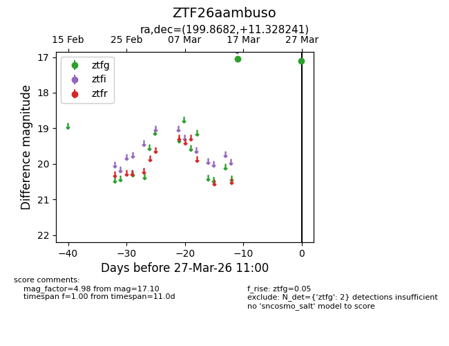
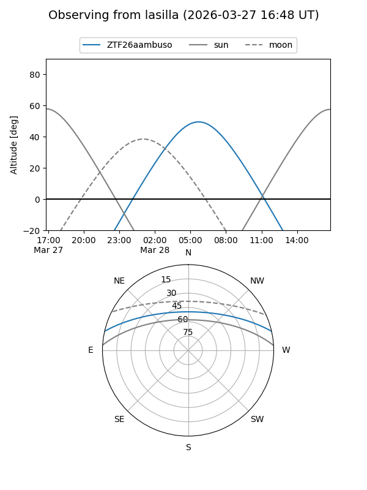
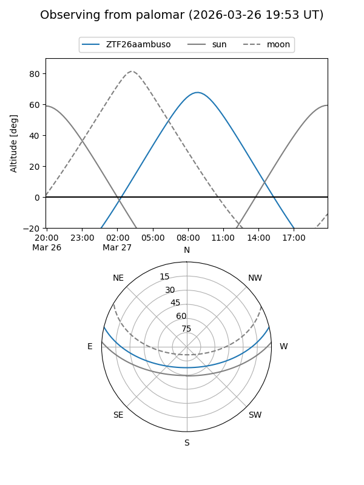

ZTF26aambuso
Target ZTF26aambuso at 2026-03-27 11:03
Aliases and brokers:
FINK: link
Lasair: link
ALeRCE: link
alt names
ZTF26aambuso (ztf,fink_ztf)
Coordinates:
equatorial (ra, dec) = 199.8682,+11.32824
equatorial (HMS+DMS) = 13:19:28.36,+11:19:41.67
galactic (l, b) = (326.9147,+72.88133)
Flags:
Photometry:
last ztfg=17.10
2 ztfg detections
Lightcurve

Visibility


Additional plots